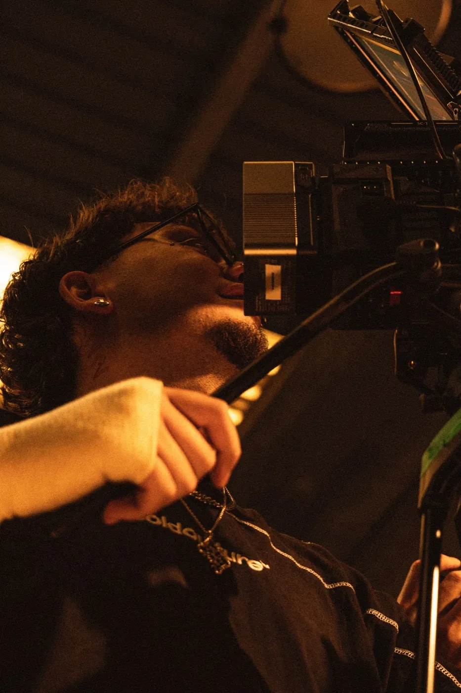

Available for
Editorial / Commercial / Music / Collaborations
Bio
Based in Barcelona, I work across photography, film and post-production. I'm drawn to people, places and moments that carry something beyond what is immediately visible. My work is about observing, experimenting and finding a visual language of my own.